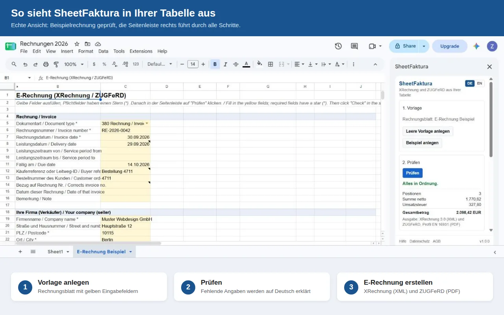
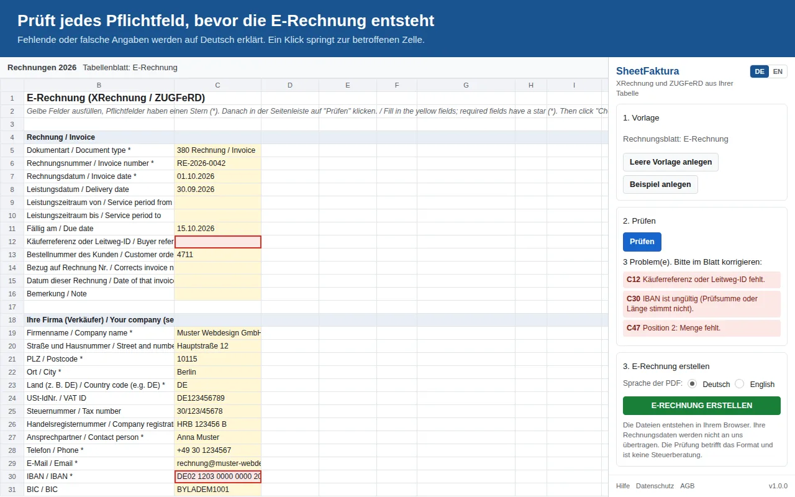
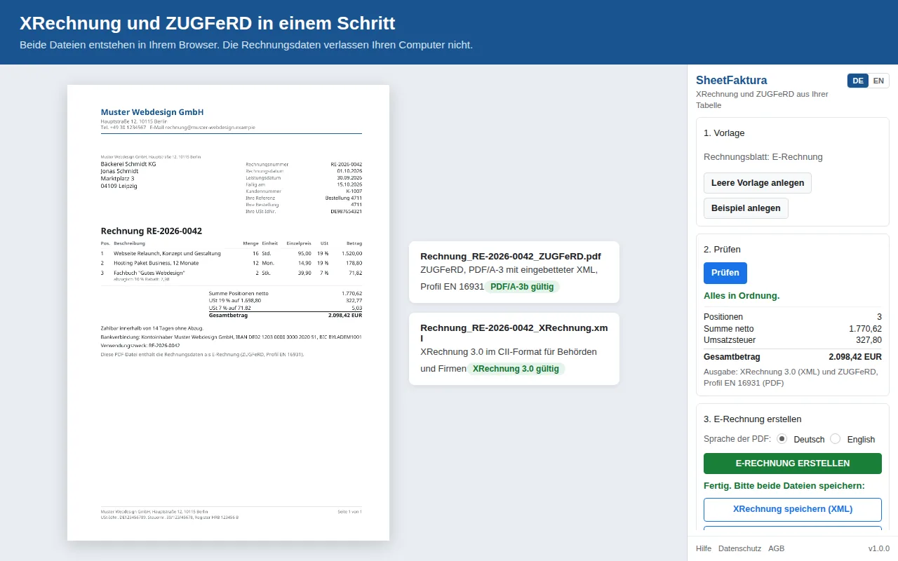

XRechnung in Google Sheets erstellen
Sie schreiben Ihre Rechnungen in Google Sheets und brauchen jetzt eine XRechnung oder eine ZUGFeRD-Datei? Mit dem Add-on SheetFaktura bleibt Ihre Tabelle das Werkzeug: Sie füllen ein Rechnungsblatt aus, das Add-on prüft die Pflichtangaben und erstellt beide Dateien in Ihrem Browser.

Echte Ansicht: Beispielrechnung in Google Sheets, rechts die Seitenleiste von SheetFaktura.
Warum eine XRechnung?
Seit 2025 müssen alle Unternehmen in Deutschland E-Rechnungen empfangen können. Ab 2027 (über 800.000 Euro Vorjahresumsatz) beziehungsweise 2028 (alle) müssen Sie E-Rechnungen auch ausstellen. Behörden verlangen die XRechnung oft schon heute. Eine einfache PDF reicht dafür nicht. Details: E-Rechnungspflicht 2025 bis 2028.
Schritt für Schritt
- Add-on öffnen: Tabelle öffnen, im Menü Erweiterungen auf SheetFaktura und dann auf Seitenleiste öffnen klicken.
- Vorlage anlegen: Leere Vorlage anlegen klicken. Zum Ausprobieren legt Beispiel anlegen eine fertige Musterrechnung an.
- Rechnung ausfüllen: Die gelben Felder ausfüllen. Pflichtfelder haben einen Stern. Für weitere Positionen Zeilen oberhalb von Summe Positionen einfügen.
- Prüfen: Prüfen klicken. Fehlende oder falsche Angaben werden auf Deutsch erklärt, ein Klick auf die Zellbezeichnung springt zum Problem.
- E-Rechnung erstellen: E-Rechnung erstellen klicken und die XRechnung (XML) und die ZUGFeRD-PDF speichern. Beide Dateien enthalten dieselbe Rechnung.

Die Prüfung zeigt, was fehlt, zum Beispiel die Käuferreferenz oder eine ungültige IBAN.
Welche Angaben braucht eine XRechnung?
Neben den üblichen Rechnungsangaben verlangt die XRechnung einige Felder, die auf Papierrechnungen oft fehlen. Das Rechnungsblatt fragt alle ab:
- Rechnungsnummer, Rechnungsdatum und Leistungsdatum oder Leistungszeitraum
- Käuferreferenz: bei Behörden die Leitweg-ID, bei Firmen zum Beispiel die Bestellnummer
- Ihre Firma: Name, Anschrift, USt-IdNr. oder Steuernummer, Kontakt (Name, Telefon, E-Mail)
- Kunde: Name und Anschrift, bei innergemeinschaftlichen Lieferungen und Reverse Charge seine USt-IdNr.
- Positionen mit Menge, Einheit, Preis und Steuerart
- Zahlung: Fälligkeit und Bankverbindung (IBAN)
Was das Add-on erzeugt
- XRechnung 3.0 in der CII-Syntax
- ZUGFeRD (Factur-X) als PDF/A-3 mit eingebetteter XML, Profil EN 16931; mit Leitweg-ID automatisch im Profil XRechnung. Mehr dazu: ZUGFeRD in Google Sheets
- Steuersätze 19 % und 7 %, steuerfrei (zum Beispiel Kleinunternehmer), Reverse Charge, innergemeinschaftliche Lieferung, Ausfuhr
- Rabatte, Skonto, Anzahlungen und Rechnungskorrekturen
Jede Version wird vor der Veröffentlichung mit dem Prüfwerkzeug der KoSIT für XRechnung und mit dem Validator Mustang für ZUGFeRD getestet.

Ergebnis: eine ZUGFeRD-PDF (PDF/A-3) und eine XRechnung-XML.
Ihre Daten bleiben bei Ihnen
Das Add-on liest nur die geöffnete Tabelle. Die Dateien entstehen in Ihrem Browser; Ihre Rechnungsdaten werden nicht an uns übertragen. Einzelheiten: Datenschutz.
Häufige Fragen
Brauche ich eine Leitweg-ID?
Nur bei Rechnungen an Behörden. Bei Firmen genügt als Käuferreferenz zum Beispiel die Bestellnummer, die Kostenstelle oder der Name des Bestellers.
Darf ich die XRechnung per E-Mail verschicken?
Ja, zwischen Unternehmen ist der Versand per E-Mail üblich. Behörden geben oft ein eigenes Eingangsportal vor.
XRechnung oder ZUGFeRD: was schicke ich?
Beide Dateien enthalten dieselbe Rechnung. Die XRechnung ist das reine Datenformat, das zum Beispiel Behörden verlangen. Die ZUGFeRD-PDF ist zusätzlich als normales Dokument lesbar. Welches Format Ihr Kunde annimmt, klären Sie mit ihm.
Was kostet das?
5 E-Rechnungen sind kostenlos. Danach 7,90 Euro im Monat, monatlich kündbar, oder 69 Euro im Jahr, jeweils zuzüglich Umsatzsteuer. XML und PDF ohne Aufpreis, keine Begrenzung der Anzahl.
Im Google Workspace Marketplace installieren Mehr über SheetFaktura
SheetFaktura prüft das Format Ihrer Rechnung; es ersetzt keine Steuerberatung.